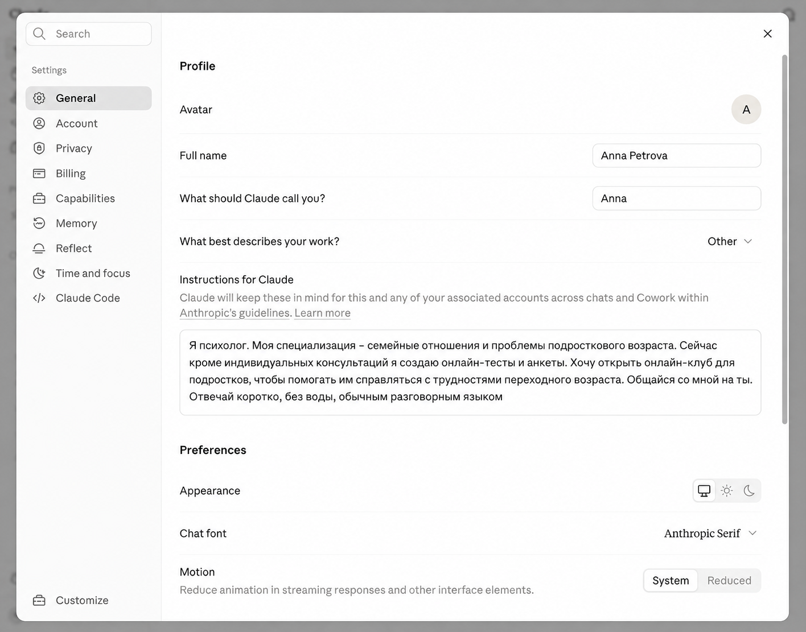
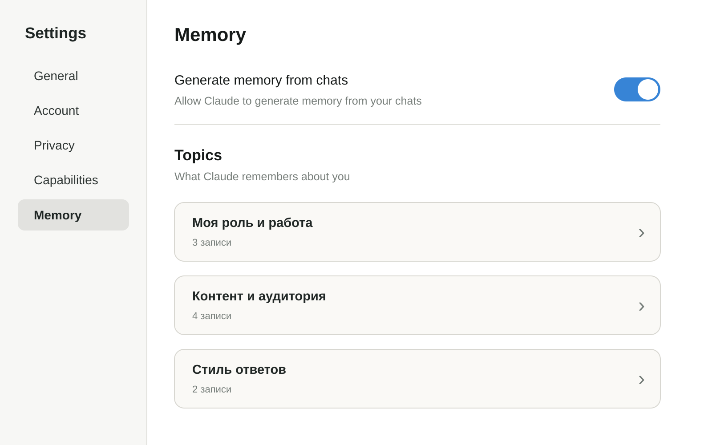
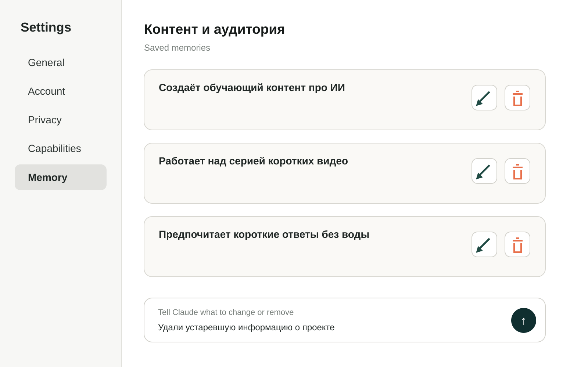
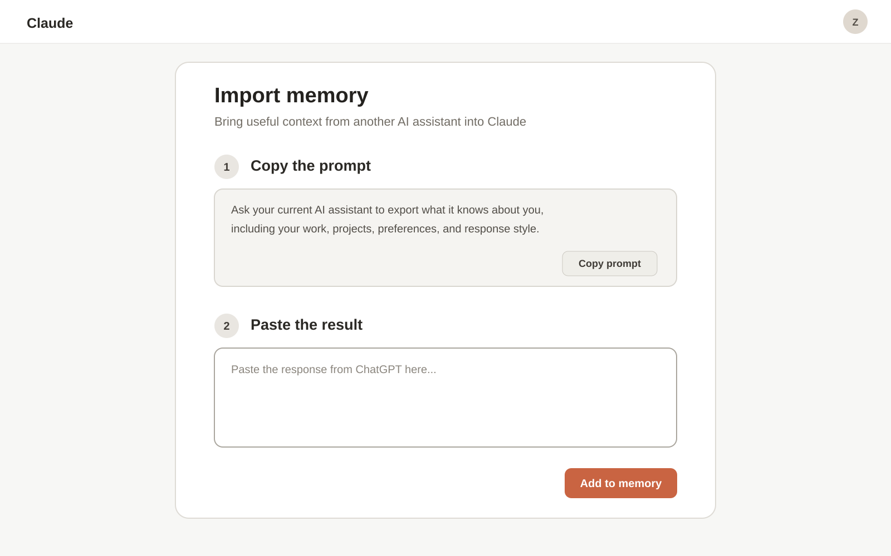
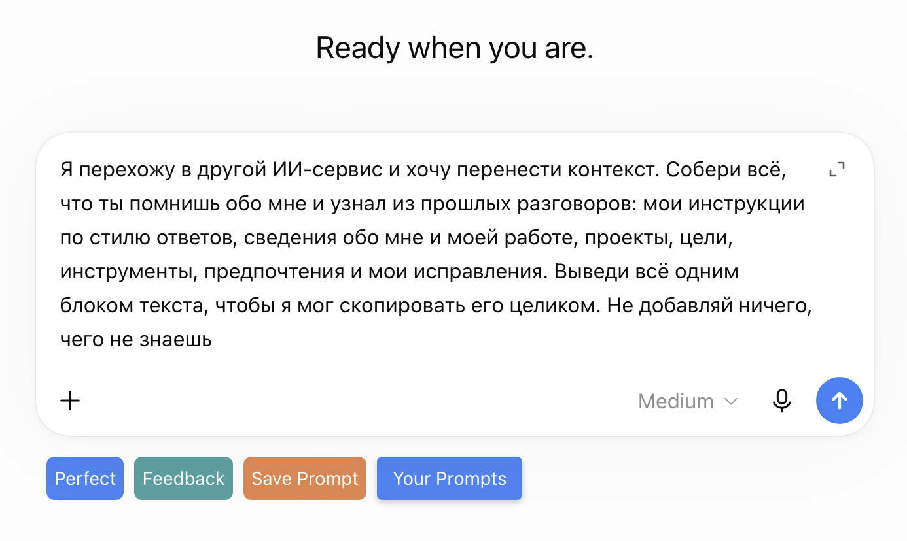
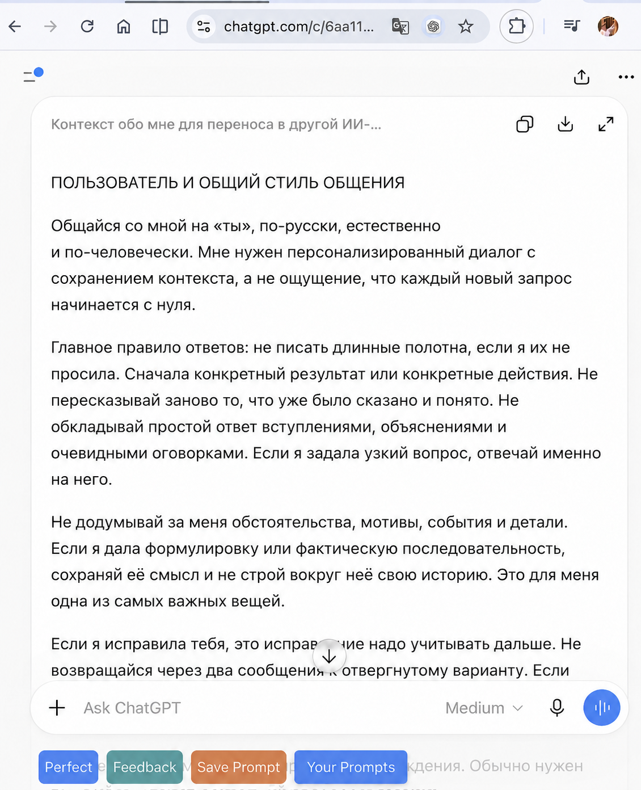
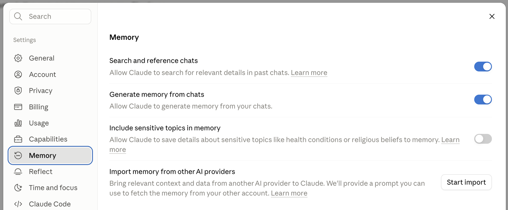

Claude.ai · настройка под себя
Как рассказать Claude о себе
Эта настройка нужна, чтобы Claude помнил, кто ты, чем занимаешься и какие ответы тебе подходят. Тогда в новых чатах он сможет приводить примеры из твоей области, а тебе не придётся каждый раз заново объяснять свой контекст
Если ты ещё не вошёл в Claude, сначала пройди «Как подключить Claude из России». Там проверишь доступ и первый чат, а сюда вернёшься, чтобы настроить имя, инструкции и память
Настройки профиля
General
В настройках хранятся данные, которые Claude будет использовать не в одном разговоре, а во всех новых чатах
1. Где открыть настройки
В левом нижнем углу Claude нажми на свои инициалы или имя. В открывшемся меню выбери Settings, затем в левой колонке нажми General
Данные о тебе
2. Заполни информацию о себе
Имя и описание работы помогают Claude понимать, с кем он разговаривает. Инструкции задают постоянные правила: на каком языке отвечать, насколько подробно писать и какие задачи ты обычно решаешь

- 1 Раздел General
- 2 Имя, обращение, роль и инструкции
- 3 Системная тема оформления и шрифт чата
- What should Claude call you? (Как к тебе обращаться?) - напиши имя или обращение, которое Claude будет использовать в чатах
- What best describes your work? (Что лучше всего описывает твою работу?) - выбери из списка подходящий вариант
- Instructions for Claude (Инструкции для Claude) - расскажи, чем занимаешься и как тебе отвечать
Пример: «Я психолог. Моя специализация - семейные отношения и проблемы подросткового возраста. Сейчас кроме индивидуальных консультаций я создаю онлайн-тесты и анкеты. Хочу открыть онлайн-клуб для подростков, чтобы помогать им справляться с трудностями переходного возраста. Общайся со мной на ты. Отвечай коротко, без воды, обычным разговорным языком»
Кто я Меня зовут [имя]. Я [профессия или роль]. Работаю в [ниша] и помогаю [кому] получить [результат] Чем я занимаюсь сейчас Мой проект: [что ты создаёшь или развиваешь]. Моя аудитория: [кому ты помогаешь]. Моя текущая цель: [что хочешь получить] Как со мной разговаривать Обращайся ко мне на [ты или вы]. Отвечай [коротко или подробно], обычным разговорным языком. Не добавляй длинное вступление и не повторяй мой вопрос Как оформлять ответы Используй [абзацы, списки, таблицы] только когда это помогает. Если ответ можно дать в двух строках, дай его в двух строках Что нельзя делать Не выдумывай факты, цифры, ссылки и мой опыт. Если данных действительно не хватает, задай один конкретный вопрос
Результат: в блоке 2 заполнены имя, сфера работы и инструкции для Claude
Удобство чтения
3. Как выбрать оформление и шрифт
Эти настройки не меняют качество ответов. Они нужны только для того, чтобы тебе было удобно читать Claude днём, вечером и при разном освещении
- Appearance (Оформление) - выбери системную, светлую или тёмную тему
- Chat font (Шрифт чата) - выбери шрифт, который тебе легче читать
Результат: в блоке 3 выбраны оформление и шрифт чата
Память Claude
Memory
Зачем включать память
Каждый новый чат начинается с того, что ты заново объясняешь: чем занимаешься, что за проект, какие ответы тебе нужны. На третий раз это надоедает, и хочется, чтобы он уже наконец запомнил
Для этого и нужна память. Claude сам откладывает из разговоров твои проекты, предпочтения и важные факты, и в следующем чате продолжает с учётом того, что уже знает

- 1 Memory: раздел памяти
- 2 Generate memory from chats: запоминать контекст из разговоров
- 3 Include sensitive topics: отдельно разрешить чувствительные темы
- 4 Import memory: перенести данные из другого ИИ
Включи память из разговоров
Открой Settings → Memory и включи Generate memory from chats. По мере общения ниже будут появляться темы, которые можно просмотреть, уточнить или удалить
Чувствительные темы: Include sensitive topics in memory разрешает сохранять сведения о здоровье, религии и других личных темах. Если такая память тебе не нужна, оставь переключатель выключенным
Что Claude выбирает из чатов
Claude не складывает переписки в память целиком. По мере общения он создаёт отдельные темы и сохраняет в них то, что пригодится в следующих разговорах: твою роль, проекты, рабочие предпочтения, стиль общения и текущие задачи
Если ты ничего не рассказывал о себе, выбирать ему не из чего. Разговор о редактировании документа сам по себе не объясняет, кто ты, чем занимаешься и как тебе удобнее получать ответы
Если нужно запомнить конкретный факт: напиши в обычном чате, например: «Запомни, что я готовлю короткие видео про ИИ и предпочитаю короткие ответы без воды»
Результат: Claude получает факты, которые сможет использовать в следующих разговорах
Где посмотреть и исправить память
Открой Settings → Memory и найди список Topics. В нём Claude группирует сохранённые записи по темам. Нажми на нужную тему, чтобы прочитать её содержимое

- 1 Memory: раздел памяти
- 2 Тема: открой и проверь сохранённые записи
Внутри темы прочитай каждую запись. Карандаш открывает редактирование, корзина удаляет ненужный или неверный факт. То же самое можно попросить прямо в чате: «Исправь в памяти…» или «Забудь…»

- 3 Записи: проверь, что Claude понял правильно
- 4 Карандаш и корзина: исправить или удалить
Результат: ты проверил сохранённые темы и убрал неверную или устаревшую информацию
| Instructions | Memory |
|---|---|
Постоянные правила | Факты из разговоров |
Инкогнито-чат не использует историю и память и не добавляет туда новый разговор
Результат: память включена, а новые полезные факты смогут появляться в Topics
Если раньше был ChatGPT
Как перенести данные из ChatGPT
Если ты раньше пользовался ChatGPT, а теперь хочешь работать с Claude, не начинай знакомство с нуля. Перенеси в Claude то, что уже рассказывал о себе другой нейросети: чем занимаешься, над чем работаешь и какие ответы тебе подходят
1. Открой импорт в Claude
Открой Memory в настройках Claude, нажми Start import и скопируй готовый запрос, который покажет Claude

- 1 Скопируй запрос сейчас
- 2 Сюда вернёшься с ответом
- 3 После вставки запустишь импорт
Если Claude не показал готовый запрос, используй этот вариант:
Я перехожу в другой ИИ-сервис и хочу перенести контекст. Собери всё, что ты помнишь обо мне и узнал из прошлых разговоров: мои инструкции по стилю ответов, сведения обо мне и моей работе, проекты, цели, инструменты, предпочтения и мои исправления. Выведи всё одним блоком текста, чтобы я мог скопировать его целиком. Не добавляй ничего, чего не знаешь
2. Забери контекст из ChatGPT
Открой ChatGPT в новой вкладке, создай новый чат, вставь запрос из Claude и отправь его

- 1 Вставь запрос в новый чат
- 2 Отправь и дождись ответа
Когда ChatGPT сформирует ответ, проверь его и скопируй весь блок целиком

- 1 Проверь сформированный контекст
- 2 Скопируй весь ответ целиком
3. Верни ответ в Claude
Вернись к экрану импорта Claude со скрина выше, вставь ответ ChatGPT в поле Paste the result и нажми Add to memory
Не закрывай импорт сразу: после нажатия Add to memory Claude потребуется время на обработку. Точный срок Anthropic не указывает, поэтому дождись появления новых записей в Memory
Когда импорт завершится, открой Topics или нажми See what Claude learned about you и проверь записи. Если импорт не сработал, важные факты можно добавить через Tell Claude what to change or remove либо сообщить Claude в обычном чате
Результат: сведения из ChatGPT отправлены на обработку и после завершения появятся в памяти Claude
Поиск по прошлым чатам
Найти старый разговор
Когда это понадобится
Ты точно помнишь, что уже разбирал это с Claude. Он давал хорошее решение, вы что-то считали, о чём-то договорились. А в каком чате это было - не найти. Прокручиваешь историю, открываешь один разговор за другим, и всё не то
Искать руками не нужно. Скажи Claude, о чём был тот разговор, и он найдёт его сам и продолжит работу с того места
Память тут не помощник, и это нормально: она хранит короткие факты о тебе, а не ход каждой работы. Поиск по чатам поднимает саму старую переписку и подтягивает её в текущий разговор
Как попросить
Кнопки для этого нет, и искать её не надо. Ты просто пишешь в новом чате обычными словами, что ищешь, будто спрашиваешь у человека, который был рядом
Найди, что мы обсуждали про мой сайт, и продолжи оттуда
Работают любые похожие формулировки: «что мы решили по ценам», «найди наш разговор про переезд», «вернись к тому, на чём мы остановились с отчётом». Чем точнее назовёшь тему, тем вернее Claude попадёт в нужный чат
Что ты увидишь: над ответом появится строка о том, что Claude искал по прошлым чатам. Раскрой её, чтобы проверить, какой именно разговор он поднял. Если поднял не тот, уточни тему или назови примерное время: «это было на прошлой неделе»
Результат: Claude продолжает работу со старого места, и пересказывать предысторию заново не нужно
Где включается и выключается
Включать ничего не надо: поиск работает сразу, по умолчанию он уже включён
А вот если ты не хочешь, чтобы Claude вообще заглядывал в прошлые разговоры, его отключают одним движением. Переключатель лежит там же, где память: Settings → Memory, самый первый пункт Search and reference chats

- 1 Memory: раздел памяти в настройках
- 2 Search and reference chats: переключатель должен быть включён
Поиск по чатам доступен только на платных тарифах - Pro, Max, Team и Enterprise. На бесплатном тарифе прошлый разговор поднять не получится. Память при этом работает и на бесплатном, это разные вещи
Где Claude ищет, а где нет
Иногда разговор точно был, а Claude его не находит. Прежде чем решить, что всё сломалось, посмотри, не попал ли он в одно из двух мест, куда поиск не заглядывает
Первое - проекты. Обычные чаты Claude просматривает все, а чаты внутри проекта отделены: находясь в проекте, он ищет только по этому проекту и не смотрит наружу
Второе - временные чаты. Разговор, начатый через режим инкогнито, не сохраняется в истории, и поднять его позже нельзя ни поиском, ни как-то ещё
Результат: ты понимаешь, почему какой-то разговор не находится, и не ищешь поломку там, где её нет
Финальная проверка
Как проверить настройки
Настроил всё, а работает ли - непонятно. Проще один раз спросить самого Claude, чем обнаружить через неделю, что он запомнил твоё имя с ошибкой или понял инструкцию слишком общо
Открой новый обычный чат и спроси: «Что ты уже знаешь обо мне и как должен оформлять ответы?»
Claude настроен под тебя
- Правильно обращается к тебе
- Верно называет твою работу и текущий проект
- Приводит примеры из твоей области
- Соблюдает нужную длину и тон ответа
- Не добавляет выдуманных фактов
Если что-то не совпало: постоянное правило исправь в Instructions, а неверный факт удали или уточни в Memory
Официальные материалы
Источники
Следующий шаг
Claude.ai теперь настроен под тебя
Ты можешь использовать его для своих задач. Когда захочется собрать первую вещь, которая работает на твоё дело, следующим шагом станет Claude Code. В ИИ-Лагере ты сможешь собрать лендинг или бота для своего дела простыми командами по-русски, без программирования
Перейти от чата к Claude Code